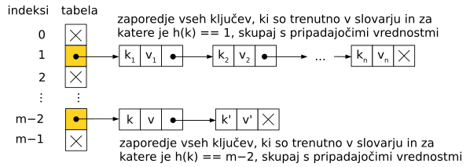
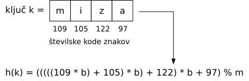

Licenca
To delo je na voljo pod pogoji slovenske licence Creative Commons 2.5:
priznanje avtorstva - nekomercialno - deljenje pod enakimi pogoji.
Celotna licenca je na voljo na spletu na naslovu http://creativecommons.org/licenses/by-nc-sa/2.5/si/. V skladu s to licenco je dovoljeno vsakemu uporabniku delo razmnoževati, distribuirati, javno priobčevati, dajati v najem in tudi predelovati, vendar samo v nekomercialne namene in ob pogoju, da navede avtorja oziroma avtorje in izdajatelja tega dela. Če uporabnik delo predela, kar pomeni, da ga spremeni, preoblikuje, prevede ali uporabi to delo v svojem delu, lahko predelavo dela ponudi na voljo le pod pogoji, ki so enaki pogojem iz te licence oziroma pod enako licenco.

*Implementacija slovarja z razpršeno tabelo
Če hoče uporabnik kasneje preveriti, ali je ključ k prisoten v slovarju (in prebrati pripadajočo vrednost), točno vemo, kje bomo ta ključ našli v naši tabeli: na indeksu h(k). Če ga ni tam, lahko zaključimo, da ga v slovarju sploh ni.
Lahko se zgodi, da se dva ali več ključev preslika v isti indeks — torej da za ključa k1 in k2 velja h(k1) = h(k2). Kaj naj naredimo, če hočemo v slovarju istočasno hraniti oba ključa? Enostavna rešitev je na primer ta, da vsak element naše tabele v resnici ne hrani zgolj enega para ⟨ključ, vrednost⟩, ampak zaporedje takih parov za vse ključe, ki so se preslikali v tisti indeks.

Če hoče uporabnik preveriti, ali je ključ k prisoten v slovarju, moramo zdaj iti po seznamu, na katerega kaže celica h(k) naše tabele, in preveriti, če je kakšen od ključev na tistem seznamu enak k. Če ga na tem seznamu ni, lahko zaključimo, da k-ja sploh ni v slovarju; če pa ga tam najdemo, bomo lahko tudi prebrali (ali spremenili) pripadajočo vrednost.
Iz tega postopka lahko vidimo, da bodo operacije na našem slovarju tem hitrejše, čim krajši bodo ti seznami. Ne želimo si torej, da bi se veliko ključev preslikalo v isti indeks — funkcija h mora ključe čim bolj enakomerno razpršiti med vseh m možnih indeksov. Zato funkciji h pravimo razprševalna funkcija, tabeli pa razpršena tabela. (Poleg tega si tudi m načeloma izberemo tako, da je približno tolikšen, kolikor ključev hočemo hraniti v slovarju; tako bodo seznami ključev, ki se preslikajo v isti indeks, v povprečju dolgi le en ali dva elementa.)
Razmislimo še o tem, kakšna bi bila primerna funkcija h. Če so naši ključi cela števila, lahko za h(k) vzamemo kar ostanek po deljenju števila k s številom m — ta ostanek je gotovo nekje med 0 in m - 1. Pri ključih drugih tipov je pogost prijem ta, da ključ najprej predelamo v neko (mogoče zelo veliko) celo število, nato pa vzamemo njegov ostanek po deljenju s k. Na primer, recimo, da je ključ nek niz. Spomnimo se, da je niz zaporedje znakov in da ima vsak znak neko številsko kodo. Izberimo si nek b, zapišimo te kode po vrsti in si jih predstavljajmo kot števke nekega velikega celega števila v b-iškem sestavu; nato moramo le še vzeti njegov ostanek po deljenju z m.

Vaja
Napiši funkcijo h(k, m), ki za poljuben niz k izračuna indeks po pravkar
opisanem postopku (za b vzemi na primer b = 100).
Vaja
V pythonu je razprševalna funkcija del jezika — imenuje se hash. Kot parameter ji moramo podati ključ, ki nas zanima (ne pa tudi števila m — za računanje ostanka po deljenju z m moramo poskrbeti sami).
(a) Napiši program, ki izpiše hash(x) za nekaj različnih vrednosti x različnih tipov (nekaj celih števil, nekaj realnih števil in nekaj nizov različnih dolžin).